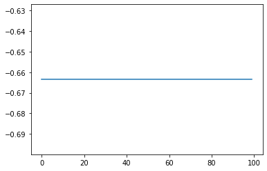
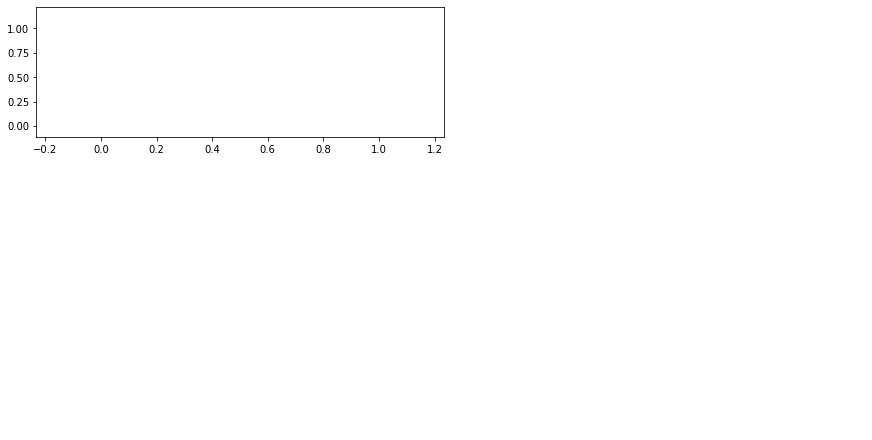

[8]:
import jax
import jax.numpy as jnp
import xidplus
import numpyro
from numpyro.infer import MCMC, NUTS, Predictive
from jax import random
import pylab as plt
%matplotlib inline
import numpy as np
[103]:
import numpyro
from numpyro.diagnostics import hpdi
import numpyro.distributions as dist
from numpyro import handlers
@jax.partial(jax.jit, static_argnums=(2))
def sp_matmul(A, B, shape):
"""
http://gcucurull.github.io/deep-learning/2020/06/03/jax-sparse-matrix-multiplication/
Arguments:
A: (N, M) sparse matrix represented as a tuple (indexes, values)
B: (M,K) dense matrix
shape: value of N
Returns:
(N, K) dense matrix
"""
assert B.ndim == 2
indexes, values = A
rows, cols = indexes
in_ = B.take(cols, axis=0)
prod = in_*values[:, None]
res = jax.ops.segment_sum(prod, rows, shape)
return res
def spire_model(priors,sub=1):
if len(priors) != 3:
raise ValueError
band_plate = numpyro.plate('bands', len(priors),dim=-2)
src_plate = numpyro.plate('nsrc', priors[0].nsrc,dim=-1)
psw_plate = numpyro.plate('psw_pixels', priors[0].sim.size, dim=-3, subsample_size=jnp.rint(sub*priors[0].sim.size).astype(int))
pmw_plate = numpyro.plate('pmw_pixels', priors[1].sim.size, dim=-3, subsample_size=jnp.rint(sub*priors[1].sim.size).astype(int))
plw_plate = numpyro.plate('plw_pixels', priors[2].sim.size, dim=-3, subsample_size=jnp.rint(sub*priors[2].sim.size).astype(int))
pointing_matrices = [([p.amat_row, p.amat_col], p.amat_data) for p in priors]
bkg_prior = jnp.array([p.bkg[0] for p in priors])
bkg_prior_sig = jnp.array([p.bkg[1] for p in priors])
nsrc = priors[0].nsrc
snpix=jnp.asarray([p.snpix for p in priors])
with band_plate:
sigma_conf = numpyro.sample('sigma_conf', dist.HalfCauchy(1.0,0.5))
bkg = numpyro.sample('bkg', dist.Normal(-5, 0.5))
with src_plate:
src_f_psw = numpyro.sample('src_f_psw',dist.Normal(10,10))
#dist.Uniform(priors[0].prior_flux_lower,
# priors[0].prior_flux_upper))
src_f_pmw = numpyro.sample('src_f_pmw',dist.Normal(10,10))
#dist.Uniform(priors[1].prior_flux_lower,
# priors[1].prior_flux_upper))
src_f_plw = numpyro.sample('src_f_plw',dist.Normal(10,10))
#dist.Uniform(priors[2].prior_flux_lower,
# priors[2].prior_flux_upper))
db_hat_psw = sp_matmul(pointing_matrices[0], src_f_psw[:,None],priors[0].snpix).reshape(-1) + bkg[0]
db_hat_pmw = sp_matmul(pointing_matrices[1], src_f_pmw[:,None],priors[1].snpix).reshape(-1) + bkg[1]
db_hat_plw = sp_matmul(pointing_matrices[2], src_f_plw[:,None],priors[2].snpix).reshape(-1) + bkg[2]
sigma_tot_psw = jnp.sqrt(jnp.power(priors[0].snim, 2) + jnp.power(sigma_conf[0], 2))
sigma_tot_pmw = jnp.sqrt(jnp.power(priors[1].snim, 2) + jnp.power(sigma_conf[1], 2))
sigma_tot_plw = jnp.sqrt(jnp.power(priors[2].snim, 2) + jnp.power(sigma_conf[2], 2))
print(db_hat_psw.reshape(-1).shape,sigma_tot_psw.shape,priors[0].sim.shape)
with psw_plate:# as ind_psw:
psw_map = numpyro.sample("obs_psw", dist.Normal(db_hat_psw, sigma_tot_psw),
obs=priors[0].sim)
with pmw_plate:# as ind_pmw:
pmw_map = numpyro.sample("obs_pmw", dist.Normal(db_hat_pmw, sigma_tot_pmw),
obs=priors[1].sim)
with plw_plate:# as ind_plw:
plw_map = numpyro.sample("obs_plw", dist.Normal(db_hat_plw, sigma_tot_plw),
obs=priors[2].sim)
#return
[95]:
priors, posterior = xidplus.load('../../../tests/test.pkl')
[104]:
nuts_kernel = NUTS(spire_model)
mcmc = MCMC(nuts_kernel,num_samples=100,num_warmup=100)
rng_key = random.PRNGKey(0)
mcmc.run(rng_key,priors )
posterior_samples = mcmc.get_samples()
(870,) (870,) (870,)
(870,) (870,) (870,)
0%| | 0/200 [00:00<?, ?it/s]
(870,) (870,) (870,)
warmup: 0%| | 1/200 [00:07<25:07, 7.57s/it, 1 steps of size 2.34e+00. acc. prob=0.00]
(870,) (870,) (870,)
sample: 100%|██████████| 200/200 [01:22<00:00, 2.43it/s, 1023 steps of size 1.18e-38. acc. prob=0.00]
[106]:
mcmc.print_summary()
mean std median 5.0% 95.0% n_eff r_hat
bkg[0,0] 1.30 0.00 1.30 1.30 1.30 0.50 0.99
bkg[1,0] 0.29 0.00 0.29 0.29 0.29 0.50 nan
bkg[2,0] 1.90 0.00 1.90 1.90 1.90 0.50 0.99
sigma_conf[0,0] 1.28 0.00 1.28 1.28 1.28 0.50 0.99
sigma_conf[1,0] 6.02 0.00 6.02 6.02 6.02 0.50 0.99
sigma_conf[2,0] 0.28 0.00 0.28 0.28 0.28 0.50 0.99
src_f_plw[0] 0.54 0.00 0.54 0.54 0.54 0.50 0.99
src_f_plw[1] 0.06 0.00 0.06 0.06 0.06 nan nan
src_f_plw[2] -1.36 0.00 -1.36 -1.36 -1.36 0.50 0.99
src_f_plw[3] -1.50 0.00 -1.50 -1.50 -1.50 0.50 0.99
src_f_plw[4] 1.62 0.00 1.62 1.62 1.62 0.50 0.99
src_f_plw[5] 0.98 0.00 0.98 0.98 0.98 0.50 0.99
src_f_plw[6] -1.57 0.00 -1.57 -1.57 -1.57 0.50 nan
src_f_plw[7] -0.52 0.00 -0.52 -0.52 -0.52 nan nan
src_f_plw[8] 1.48 0.00 1.48 1.48 1.48 nan 0.99
src_f_plw[9] 1.08 0.00 1.08 1.08 1.08 0.50 0.99
src_f_plw[10] -0.52 0.00 -0.52 -0.52 -0.52 nan nan
src_f_plw[11] -0.65 0.00 -0.65 -0.65 -0.65 0.50 nan
src_f_plw[12] 0.28 0.00 0.28 0.28 0.28 0.50 0.99
src_f_plw[13] -0.37 0.00 -0.37 -0.37 -0.37 0.50 0.99
src_f_plw[14] -1.18 0.00 -1.18 -1.18 -1.18 0.50 0.99
src_f_plw[15] -1.90 0.00 -1.90 -1.90 -1.90 0.50 0.99
src_f_plw[16] 1.39 0.00 1.39 1.39 1.39 0.50 0.99
src_f_plw[17] 1.73 0.00 1.73 1.73 1.73 0.50 0.99
src_f_plw[18] -1.15 0.00 -1.15 -1.15 -1.15 0.50 0.99
src_f_plw[19] -1.35 0.00 -1.35 -1.35 -1.35 nan 0.99
src_f_plw[20] -1.27 0.00 -1.27 -1.27 -1.27 0.50 0.99
src_f_plw[21] 1.08 0.00 1.08 1.08 1.08 0.50 nan
src_f_plw[22] -1.15 0.00 -1.15 -1.15 -1.15 0.50 0.99
src_f_plw[23] 0.17 0.00 0.17 0.17 0.17 0.50 0.99
src_f_plw[24] -0.55 0.00 -0.55 -0.55 -0.55 0.50 0.99
src_f_plw[25] 0.84 0.00 0.84 0.84 0.84 0.50 0.99
src_f_plw[26] 1.68 0.00 1.68 1.68 1.68 0.50 0.99
src_f_plw[27] -0.74 0.00 -0.74 -0.74 -0.74 0.50 0.99
src_f_plw[28] 1.67 0.00 1.67 1.67 1.67 0.50 0.99
src_f_plw[29] -1.83 0.00 -1.83 -1.83 -1.83 0.50 0.99
src_f_plw[30] -0.14 0.00 -0.14 -0.14 -0.14 0.50 nan
src_f_plw[31] -0.29 0.00 -0.29 -0.29 -0.29 nan nan
src_f_plw[32] 0.67 0.00 0.67 0.67 0.67 0.50 0.99
src_f_plw[33] 0.45 0.00 0.45 0.45 0.45 0.50 nan
src_f_plw[34] -1.08 0.00 -1.08 -1.08 -1.08 0.50 0.99
src_f_plw[35] -0.98 0.00 -0.98 -0.98 -0.98 0.50 0.99
src_f_plw[36] 1.03 0.00 1.03 1.03 1.03 0.50 0.99
src_f_plw[37] -1.76 0.00 -1.76 -1.76 -1.76 0.50 0.99
src_f_plw[38] 1.32 0.00 1.32 1.32 1.32 0.50 0.99
src_f_plw[39] -1.00 0.00 -1.00 -1.00 -1.00 0.50 0.99
src_f_plw[40] 1.14 0.00 1.14 1.14 1.14 0.50 0.99
src_f_plw[41] 1.26 0.00 1.26 1.26 1.26 0.50 0.99
src_f_plw[42] -0.35 0.00 -0.35 -0.35 -0.35 0.50 0.99
src_f_plw[43] 1.22 0.00 1.22 1.22 1.22 0.50 0.99
src_f_plw[44] 0.03 0.00 0.03 0.03 0.03 nan nan
src_f_plw[45] -0.02 0.00 -0.02 -0.02 -0.02 nan nan
src_f_plw[46] -1.64 0.00 -1.64 -1.64 -1.64 0.50 0.99
src_f_plw[47] -0.24 0.00 -0.24 -0.24 -0.24 0.50 0.99
src_f_plw[48] 1.62 0.00 1.62 1.62 1.62 0.50 0.99
src_f_plw[49] 1.01 0.00 1.01 1.01 1.01 0.50 0.99
src_f_plw[50] -0.59 0.00 -0.59 -0.59 -0.59 0.50 nan
src_f_pmw[0] 0.17 0.00 0.17 0.17 0.17 0.50 nan
src_f_pmw[1] 1.15 0.00 1.15 1.15 1.15 0.50 0.99
src_f_pmw[2] 1.78 0.00 1.78 1.78 1.78 0.50 0.99
src_f_pmw[3] -1.59 0.00 -1.59 -1.59 -1.59 nan nan
src_f_pmw[4] 1.56 0.00 1.56 1.56 1.56 nan nan
src_f_pmw[5] -0.83 0.00 -0.83 -0.83 -0.83 0.50 0.99
src_f_pmw[6] -0.31 0.00 -0.31 -0.31 -0.31 0.50 0.99
src_f_pmw[7] -1.80 0.00 -1.80 -1.80 -1.80 0.50 0.99
src_f_pmw[8] -1.80 0.00 -1.80 -1.80 -1.80 0.50 0.99
src_f_pmw[9] -0.07 0.00 -0.07 -0.07 -0.07 nan nan
src_f_pmw[10] 1.24 0.00 1.24 1.24 1.24 0.50 0.99
src_f_pmw[11] -0.07 0.00 -0.07 -0.07 -0.07 nan nan
src_f_pmw[12] 0.54 0.00 0.54 0.54 0.54 0.50 0.99
src_f_pmw[13] -1.40 0.00 -1.40 -1.40 -1.40 0.50 0.99
src_f_pmw[14] -0.25 0.00 -0.25 -0.25 -0.25 0.50 0.99
src_f_pmw[15] -1.46 0.00 -1.46 -1.46 -1.46 0.50 0.99
src_f_pmw[16] 1.55 0.00 1.55 1.55 1.55 0.50 0.99
src_f_pmw[17] 0.15 0.00 0.15 0.15 0.15 0.50 nan
src_f_pmw[18] -0.05 0.00 -0.05 -0.05 -0.05 nan nan
src_f_pmw[19] -1.58 0.00 -1.58 -1.58 -1.58 0.50 0.99
src_f_pmw[20] 0.04 0.00 0.04 0.04 0.04 nan nan
src_f_pmw[21] 1.96 0.00 1.96 1.96 1.96 nan nan
src_f_pmw[22] 0.76 0.00 0.76 0.76 0.76 0.50 nan
src_f_pmw[23] 1.34 0.00 1.34 1.34 1.34 0.50 0.99
src_f_pmw[24] 1.93 0.00 1.93 1.93 1.93 0.50 0.99
src_f_pmw[25] -0.83 0.00 -0.83 -0.83 -0.83 0.50 0.99
src_f_pmw[26] -1.50 0.00 -1.50 -1.50 -1.50 0.50 0.99
src_f_pmw[27] -0.95 0.00 -0.95 -0.95 -0.95 0.50 0.99
src_f_pmw[28] 0.02 0.00 0.02 0.02 0.02 nan nan
src_f_pmw[29] 0.33 0.00 0.33 0.33 0.33 0.50 0.99
src_f_pmw[30] -0.48 0.00 -0.48 -0.48 -0.48 0.50 0.99
src_f_pmw[31] -0.35 0.00 -0.35 -0.35 -0.35 0.50 nan
src_f_pmw[32] -0.64 0.00 -0.64 -0.64 -0.64 nan nan
src_f_pmw[33] 0.01 0.00 0.01 0.01 0.01 nan nan
src_f_pmw[34] -0.58 0.00 -0.58 -0.58 -0.58 nan nan
src_f_pmw[35] 0.12 0.00 0.12 0.12 0.12 nan nan
src_f_pmw[36] 0.34 0.00 0.34 0.34 0.34 0.50 0.99
src_f_pmw[37] 1.29 0.00 1.29 1.29 1.29 0.50 0.99
src_f_pmw[38] -0.11 0.00 -0.11 -0.11 -0.11 0.50 nan
src_f_pmw[39] 0.19 0.00 0.19 0.19 0.19 0.50 0.99
src_f_pmw[40] -1.49 0.00 -1.49 -1.49 -1.49 0.50 0.99
src_f_pmw[41] 0.80 0.00 0.80 0.80 0.80 0.50 nan
src_f_pmw[42] 0.28 0.00 0.28 0.28 0.28 0.50 0.99
src_f_pmw[43] -0.16 0.00 -0.16 -0.16 -0.16 0.50 nan
src_f_pmw[44] 0.25 0.00 0.25 0.25 0.25 0.50 nan
src_f_pmw[45] -1.05 0.00 -1.05 -1.05 -1.05 0.50 0.99
src_f_pmw[46] 1.19 0.00 1.19 1.19 1.19 0.50 0.99
src_f_pmw[47] -0.78 0.00 -0.78 -0.78 -0.78 nan nan
src_f_pmw[48] 1.76 0.00 1.76 1.76 1.76 0.50 0.99
src_f_pmw[49] 0.73 0.00 0.73 0.73 0.73 0.50 0.99
src_f_pmw[50] -1.49 0.00 -1.49 -1.49 -1.49 0.50 nan
src_f_psw[0] -0.66 0.00 -0.66 -0.66 -0.66 0.50 0.99
src_f_psw[1] -1.39 0.00 -1.39 -1.39 -1.39 0.50 0.99
src_f_psw[2] -0.91 0.00 -0.91 -0.91 -0.91 nan nan
src_f_psw[3] -1.69 0.00 -1.69 -1.69 -1.69 0.50 0.99
src_f_psw[4] -1.44 0.00 -1.44 -1.44 -1.44 0.50 0.99
src_f_psw[5] 0.41 0.00 0.41 0.41 0.41 0.50 0.99
src_f_psw[6] -1.50 0.00 -1.50 -1.50 -1.50 0.50 0.99
src_f_psw[7] -1.28 0.00 -1.28 -1.28 -1.28 0.50 0.99
src_f_psw[8] -0.69 0.00 -0.69 -0.69 -0.69 0.50 0.99
src_f_psw[9] -1.77 0.00 -1.77 -1.77 -1.77 0.50 0.99
src_f_psw[10] 0.15 0.00 0.15 0.15 0.15 0.50 nan
src_f_psw[11] 0.13 0.00 0.13 0.13 0.13 0.50 nan
src_f_psw[12] -0.53 0.00 -0.53 -0.53 -0.53 nan nan
src_f_psw[13] -0.95 0.00 -0.95 -0.95 -0.95 0.50 0.99
src_f_psw[14] 1.89 0.00 1.89 1.89 1.89 0.50 0.99
src_f_psw[15] 1.88 0.00 1.88 1.88 1.88 0.50 0.99
src_f_psw[16] 1.29 0.00 1.29 1.29 1.29 0.50 nan
src_f_psw[17] -0.30 0.00 -0.30 -0.30 -0.30 nan nan
src_f_psw[18] -0.01 0.00 -0.01 -0.01 -0.01 nan nan
src_f_psw[19] 0.64 0.00 0.64 0.64 0.64 0.50 nan
src_f_psw[20] -0.86 0.00 -0.86 -0.86 -0.86 0.50 0.99
src_f_psw[21] 0.68 0.00 0.68 0.68 0.68 0.50 0.99
src_f_psw[22] 1.81 0.00 1.81 1.81 1.81 0.50 0.99
src_f_psw[23] 0.13 0.00 0.13 0.13 0.13 nan nan
src_f_psw[24] -1.62 0.00 -1.62 -1.62 -1.62 0.50 0.99
src_f_psw[25] -1.08 0.00 -1.08 -1.08 -1.08 0.50 0.99
src_f_psw[26] 0.43 0.00 0.43 0.43 0.43 0.50 0.99
src_f_psw[27] 1.13 0.00 1.13 1.13 1.13 0.50 0.99
src_f_psw[28] -1.01 0.00 -1.01 -1.01 -1.01 0.50 0.99
src_f_psw[29] 1.78 0.00 1.78 1.78 1.78 0.50 0.99
src_f_psw[30] -1.18 0.00 -1.18 -1.18 -1.18 0.50 0.99
src_f_psw[31] -1.15 0.00 -1.15 -1.15 -1.15 0.50 0.99
src_f_psw[32] -0.11 0.00 -0.11 -0.11 -0.11 0.50 nan
src_f_psw[33] 0.71 0.00 0.71 0.71 0.71 0.50 0.99
src_f_psw[34] 1.35 0.00 1.35 1.35 1.35 0.50 0.99
src_f_psw[35] -0.48 0.00 -0.48 -0.48 -0.48 0.50 0.99
src_f_psw[36] 0.91 0.00 0.91 0.91 0.91 nan nan
src_f_psw[37] -1.55 0.00 -1.55 -1.55 -1.55 0.50 0.99
src_f_psw[38] -1.12 0.00 -1.12 -1.12 -1.12 0.50 0.99
src_f_psw[39] 1.86 0.00 1.86 1.86 1.86 0.50 0.99
src_f_psw[40] 1.77 0.00 1.77 1.77 1.77 0.50 0.99
src_f_psw[41] -1.81 0.00 -1.81 -1.81 -1.81 0.50 0.99
src_f_psw[42] 0.74 0.00 0.74 0.74 0.74 0.50 0.99
src_f_psw[43] 1.69 0.00 1.69 1.69 1.69 0.50 0.99
src_f_psw[44] -1.65 0.00 -1.65 -1.65 -1.65 0.50 0.99
src_f_psw[45] -1.68 0.00 -1.68 -1.68 -1.68 0.50 0.99
src_f_psw[46] -1.41 0.00 -1.41 -1.41 -1.41 0.50 0.99
src_f_psw[47] 0.37 0.00 0.37 0.37 0.37 0.50 0.99
src_f_psw[48] -1.99 0.00 -1.99 -1.99 -1.99 0.50 0.99
src_f_psw[49] 0.51 0.00 0.51 0.51 0.51 nan nan
src_f_psw[50] -1.31 0.00 -1.31 -1.31 -1.31 nan nan
Number of divergences: 0
[107]:
posterior_samples['src_f_psw']
[107]:
DeviceArray([[-0.66346645, -1.3929534 , -0.9084854 , ..., -1.9942341 ,
0.5072365 , -1.3078156 ],
[-0.66346645, -1.3929534 , -0.9084854 , ..., -1.9942341 ,
0.5072365 , -1.3078156 ],
[-0.66346645, -1.3929534 , -0.9084854 , ..., -1.9942341 ,
0.5072365 , -1.3078156 ],
...,
[-0.66346645, -1.3929534 , -0.9084854 , ..., -1.9942341 ,
0.5072365 , -1.3078156 ],
[-0.66346645, -1.3929534 , -0.9084854 , ..., -1.9942341 ,
0.5072365 , -1.3078156 ],
[-0.66346645, -1.3929534 , -0.9084854 , ..., -1.9942341 ,
0.5072365 , -1.3078156 ]], dtype=float32)
[110]:
plt.plot(posterior_samples['src_f_psw'][:,0])
[110]:
[<matplotlib.lines.Line2D at 0x7f9222cce710>]

[83]:
posterior_samples['src_f_psw'][:,0]
[83]:
DeviceArray([13.736642, 13.736642, 13.736642, 13.736642, 13.736642,
13.736642, 13.736642, 13.736642, 13.736642, 13.736642,
13.736642, 13.736642, 13.736642, 13.736642, 13.736642,
13.736642, 13.736642, 13.736642, 13.736642, 13.736642,
13.736642, 13.736642, 13.736642, 13.736642, 13.736642,
13.736642, 13.736642, 13.736642, 13.736642, 13.736642,
13.736642, 13.736642, 13.736642, 13.736642, 13.736642,
13.736642, 13.736642, 13.736642, 13.736642, 13.736642,
13.736642, 13.736642, 13.736642, 13.736642, 13.736642,
13.736642, 13.736642, 13.736642, 13.736642, 13.736642,
13.736642, 13.736642, 13.736642, 13.736642, 13.736642,
13.736642, 13.736642, 13.736642, 13.736642, 13.736642,
13.736642, 13.736642, 13.736642, 13.736642, 13.736642,
13.736642, 13.736642, 13.736642, 13.736642, 13.736642,
13.736642, 13.736642, 13.736642, 13.736642, 13.736642,
13.736642, 13.736642, 13.736642, 13.736642, 13.736642,
13.736642, 13.736642, 13.736642, 13.736642, 13.736642,
13.736642, 13.736642, 13.736642, 13.736642, 13.736642,
13.736642, 13.736642, 13.736642, 13.736642, 13.736642,
13.736642, 13.736642, 13.736642, 13.736642, 13.736642,
13.736642, 13.736642, 13.736642, 13.736642, 13.736642,
13.736642, 13.736642, 13.736642, 13.736642, 13.736642,
13.736642, 13.736642, 13.736642, 13.736642, 13.736642,
13.736642, 13.736642, 13.736642, 13.736642, 13.736642,
13.736642, 13.736642, 13.736642, 13.736642, 13.736642,
13.736642, 13.736642, 13.736642, 13.736642, 13.736642,
13.736642, 13.736642, 13.736642, 13.736642, 13.736642,
13.736642, 13.736642, 13.736642, 13.736642, 13.736642,
13.736642, 13.736642, 13.736642, 13.736642, 13.736642,
13.736642, 13.736642, 13.736642, 13.736642, 13.736642,
13.736642, 13.736642, 13.736642, 13.736642, 13.736642,
13.736642, 13.736642, 13.736642, 13.736642, 13.736642,
13.736642, 13.736642, 13.736642, 13.736642, 13.736642,
13.736642, 13.736642, 13.736642, 13.736642, 13.736642,
13.736642, 13.736642, 13.736642, 13.736642, 13.736642,
13.736642, 13.736642, 13.736642, 13.736642, 13.736642,
13.736642, 13.736642, 13.736642, 13.736642, 13.736642,
13.736642, 13.736642, 13.736642, 13.736642, 13.736642,
13.736642, 13.736642, 13.736642, 13.736642, 13.736642,
13.736642, 13.736642, 13.736642, 13.736642, 13.736642,
13.736642, 13.736642, 13.736642, 13.736642, 13.736642,
13.736642, 13.736642, 13.736642, 13.736642, 13.736642,
13.736642, 13.736642, 13.736642, 13.736642, 13.736642,
13.736642, 13.736642, 13.736642, 13.736642, 13.736642,
13.736642, 13.736642, 13.736642, 13.736642, 13.736642,
13.736642, 13.736642, 13.736642, 13.736642, 13.736642,
13.736642, 13.736642, 13.736642, 13.736642, 13.736642,
13.736642, 13.736642, 13.736642, 13.736642, 13.736642,
13.736642, 13.736642, 13.736642, 13.736642, 13.736642,
13.736642, 13.736642, 13.736642, 13.736642, 13.736642,
13.736642, 13.736642, 13.736642, 13.736642, 13.736642,
13.736642, 13.736642, 13.736642, 13.736642, 13.736642,
13.736642, 13.736642, 13.736642, 13.736642, 13.736642,
13.736642, 13.736642, 13.736642, 13.736642, 13.736642,
13.736642, 13.736642, 13.736642, 13.736642, 13.736642,
13.736642, 13.736642, 13.736642, 13.736642, 13.736642,
13.736642, 13.736642, 13.736642, 13.736642, 13.736642,
13.736642, 13.736642, 13.736642, 13.736642, 13.736642,
13.736642, 13.736642, 13.736642, 13.736642, 13.736642,
13.736642, 13.736642, 13.736642, 13.736642, 13.736642,
13.736642, 13.736642, 13.736642, 13.736642, 13.736642,
13.736642, 13.736642, 13.736642, 13.736642, 13.736642,
13.736642, 13.736642, 13.736642, 13.736642, 13.736642,
13.736642, 13.736642, 13.736642, 13.736642, 13.736642,
13.736642, 13.736642, 13.736642, 13.736642, 13.736642,
13.736642, 13.736642, 13.736642, 13.736642, 13.736642,
13.736642, 13.736642, 13.736642, 13.736642, 13.736642,
13.736642, 13.736642, 13.736642, 13.736642, 13.736642,
13.736642, 13.736642, 13.736642, 13.736642, 13.736642,
13.736642, 13.736642, 13.736642, 13.736642, 13.736642,
13.736642, 13.736642, 13.736642, 13.736642, 13.736642,
13.736642, 13.736642, 13.736642, 13.736642, 13.736642,
13.736642, 13.736642, 13.736642, 13.736642, 13.736642,
13.736642, 13.736642, 13.736642, 13.736642, 13.736642,
13.736642, 13.736642, 13.736642, 13.736642, 13.736642,
13.736642, 13.736642, 13.736642, 13.736642, 13.736642,
13.736642, 13.736642, 13.736642, 13.736642, 13.736642,
13.736642, 13.736642, 13.736642, 13.736642, 13.736642,
13.736642, 13.736642, 13.736642, 13.736642, 13.736642,
13.736642, 13.736642, 13.736642, 13.736642, 13.736642,
13.736642, 13.736642, 13.736642, 13.736642, 13.736642,
13.736642, 13.736642, 13.736642, 13.736642, 13.736642,
13.736642, 13.736642, 13.736642, 13.736642, 13.736642,
13.736642, 13.736642, 13.736642, 13.736642, 13.736642,
13.736642, 13.736642, 13.736642, 13.736642, 13.736642,
13.736642, 13.736642, 13.736642, 13.736642, 13.736642,
13.736642, 13.736642, 13.736642, 13.736642, 13.736642,
13.736642, 13.736642, 13.736642, 13.736642, 13.736642,
13.736642, 13.736642, 13.736642, 13.736642, 13.736642,
13.736642, 13.736642, 13.736642, 13.736642, 13.736642,
13.736642, 13.736642, 13.736642, 13.736642, 13.736642,
13.736642, 13.736642, 13.736642, 13.736642, 13.736642,
13.736642, 13.736642, 13.736642, 13.736642, 13.736642,
13.736642, 13.736642, 13.736642, 13.736642, 13.736642,
13.736642, 13.736642, 13.736642, 13.736642, 13.736642,
13.736642, 13.736642, 13.736642, 13.736642, 13.736642,
13.736642, 13.736642, 13.736642, 13.736642, 13.736642,
13.736642, 13.736642, 13.736642, 13.736642, 13.736642,
13.736642, 13.736642, 13.736642, 13.736642, 13.736642,
13.736642, 13.736642, 13.736642, 13.736642, 13.736642], dtype=float32)
[13]:
---------------------------------------------------------------------------
ValueError Traceback (most recent call last)
<ipython-input-13-75d3832f7b64> in <module>
1 data = az.from_numpyro(mcmc)
----> 2 az.plot_trace(data, compact=True);
~/anaconda3/envs/xidplus/lib/python3.6/site-packages/arviz/plots/traceplot.py in plot_trace(data, var_names, filter_vars, transform, coords, divergences, kind, figsize, rug, lines, circ_var_names, circ_var_units, compact, compact_prop, combined, chain_prop, legend, plot_kwargs, fill_kwargs, rug_kwargs, hist_kwargs, trace_kwargs, rank_kwargs, axes, backend, backend_config, backend_kwargs, show)
236
237 plot = get_plotting_function("plot_trace", "traceplot", backend)
--> 238 axes = plot(**trace_plot_args)
239
240 return axes
~/anaconda3/envs/xidplus/lib/python3.6/site-packages/arviz/plots/backends/matplotlib/traceplot.py in plot_trace(data, var_names, divergences, kind, figsize, rug, lines, circ_var_names, circ_var_units, compact, compact_prop, combined, chain_prop, legend, plot_kwargs, fill_kwargs, rug_kwargs, hist_kwargs, trace_kwargs, rank_kwargs, plotters, divergence_data, axes, backend_kwargs, backend_config, show)
296 rank_kwargs,
297 is_circular,
--> 298 circ_var_units,
299 )
300 if legend:
~/anaconda3/envs/xidplus/lib/python3.6/site-packages/arviz/plots/backends/matplotlib/traceplot.py in _plot_chains_mpl(axes, idy, value, data, chain_prop, combined, xt_labelsize, rug, kind, trace_kwargs, hist_kwargs, plot_kwargs, fill_kwargs, rug_kwargs, rank_kwargs, is_circular, circ_var_units)
476 backend="matplotlib",
477 show=False,
--> 478 is_circular=circ_var_units,
479 )
480
~/anaconda3/envs/xidplus/lib/python3.6/site-packages/arviz/plots/distplot.py in plot_dist(values, values2, color, kind, cumulative, label, rotated, rug, bw, circular, quantiles, contour, fill_last, figsize, textsize, plot_kwargs, fill_kwargs, rug_kwargs, contour_kwargs, contourf_kwargs, pcolormesh_kwargs, hist_kwargs, is_circular, ax, backend, backend_kwargs, show, **kwargs)
211
212 plot = get_plotting_function("plot_dist", "distplot", backend)
--> 213 ax = plot(**dist_plot_args)
214 return ax
~/anaconda3/envs/xidplus/lib/python3.6/site-packages/arviz/plots/backends/matplotlib/distplot.py in plot_dist(values, values2, color, kind, cumulative, label, rotated, rug, bw, circular, quantiles, contour, fill_last, figsize, textsize, plot_kwargs, fill_kwargs, rug_kwargs, contour_kwargs, contourf_kwargs, pcolormesh_kwargs, hist_kwargs, is_circular, ax, backend_kwargs, show)
108 backend_kwargs=backend_kwargs,
109 is_circular=is_circular,
--> 110 show=show,
111 )
112
~/anaconda3/envs/xidplus/lib/python3.6/site-packages/arviz/plots/kdeplot.py in plot_kde(values, values2, cumulative, rug, label, bw, adaptive, circular, quantiles, rotated, contour, fill_last, figsize, textsize, plot_kwargs, fill_kwargs, rug_kwargs, contour_kwargs, contourf_kwargs, pcolormesh_kwargs, is_circular, ax, legend, backend, backend_kwargs, show, return_glyph, **kwargs)
248 bw = "experimental"
249
--> 250 grid, density = kde(values, circular, bw=bw, adaptive=adaptive, cumulative=cumulative)
251 lower, upper = grid[0], grid[-1]
252
~/anaconda3/envs/xidplus/lib/python3.6/site-packages/arviz/stats/density_utils.py in kde(x, circular, **kwargs)
533 kde_fun = _kde_linear
534
--> 535 return kde_fun(x, **kwargs)
536
537
~/anaconda3/envs/xidplus/lib/python3.6/site-packages/arviz/stats/density_utils.py in _kde_linear(x, bw, adaptive, extend, bound_correction, extend_fct, bw_fct, bw_return, custom_lims, cumulative, grid_len, **kwargs)
640 grid, pdf = _kde_adaptive(x, bw, grid_edges, grid_counts, grid_len, bound_correction)
641 else:
--> 642 grid, pdf = _kde_convolution(x, bw, grid_edges, grid_counts, grid_len, bound_correction)
643
644 if cumulative:
~/anaconda3/envs/xidplus/lib/python3.6/site-packages/arviz/stats/density_utils.py in _kde_convolution(x, bw, grid_edges, grid_counts, grid_len, bound_correction, **kwargs)
772
773 # See: https://stackoverflow.com/questions/2773606/gaussian-filter-in-matlab
--> 774 kernel_n = int(bw * 2 * np.pi)
775
776 # Temporal fix?
ValueError: cannot convert float NaN to integer

[157]:
def psw(priors):
pointing_matrices = [([p.amat_row, p.amat_col], p.amat_data) for p in priors]
flux_lower=np.asarray([p.prior_flux_lower for p in priors]).T
flux_upper=np.asarray([p.prior_flux_upper for p in priors]).T
with numpyro.plate('bands', len(priors)):
sigma_conf = numpyro.sample('sigma_conf', dist.HalfCauchy(1.0,0.5))
bkg = numpyro.sample('bkg', dist.Normal(-5, 0.5))
with numpyro.plate('nsrc', priors[0].nsrc):
src_f = numpyro.sample('src_f',dist.Uniform(flux_lower,flux_upper))
db_hat_psw = sp_matmul(pointing_matrices[0], src_f[:,0][:,None],priors[0].snpix).reshape(-1) + bkg[0]
db_hat_pmw = sp_matmul(pointing_matrices[1], src_f[:,1][:,None],priors[1].snpix).reshape(-1) + bkg[1]
db_hat_plw = sp_matmul(pointing_matrices[2], src_f[:,2][:,None],priors[2].snpix).reshape(-1) + bkg[2]
sigma_tot_psw = jnp.sqrt(jnp.power(priors[0].snim, 2) + jnp.power(sigma_conf[0], 2))
sigma_tot_pmw = jnp.sqrt(jnp.power(priors[1].snim, 2) + jnp.power(sigma_conf[1], 2))
sigma_tot_plw = jnp.sqrt(jnp.power(priors[2].snim, 2) + jnp.power(sigma_conf[2], 2))
with numpyro.plate('psw_pixels', priors[0].sim.size):# as ind_psw:
psw_map = numpyro.sample("obs_psw", dist.Normal(db_hat_psw, sigma_tot_psw),
obs=priors[0].sim)
with numpyro.plate('pmw_pixels', priors[1].sim.size):# as ind_pmw:
pmw_map = numpyro.sample("obs_pmw", dist.Normal(db_hat_pmw, sigma_tot_pmw),
obs=priors[1].sim)
with numpyro.plate('plw_pixels', priors[2].sim.size):# as ind_plw:
plw_map = numpyro.sample("obs_plw", dist.Normal(db_hat_plw, sigma_tot_plw),
obs=priors[2].sim)
return psw_map
[175]:
nuts_kernel = NUTS(psw)
mcmc = MCMC(nuts_kernel,num_samples=500,num_warmup=500,num_chains=4)
rng_key = random.PRNGKey(0)
mcmc.run(rng_key,priors)
posterior_samples = mcmc.get_samples()
[146]:
flux_lower=np.asarray([p.prior_flux_lower for p in priors])
[150]:
import numpy as np
np.asarray(flux_lower).shape
[150]:
(3, 51)
[162]:
numpyro.util.
---------------------------------------------------------------------------
AttributeError Traceback (most recent call last)
<ipython-input-162-fceccd9e2e7d> in <module>
----> 1 numpyro.ipynb
AttributeError: module 'numpyro' has no attribute 'ipynb'
[177]:
mcmc.get_extra_fields()
[177]:
{'diverging': DeviceArray([False, False, False, ..., False, False, False], dtype=bool)}
[163]:
import os
cpuCount = os.cpu_count()
[164]:
cpuCount
[164]:
4
[190]:
from numpyro.diagnostics import print_summary, summary
from numpyro.util import cached_by, fori_collect, identity
from operator import attrgetter
def summary_info(mcmc, prob=0.9, exclude_deterministic=True):
"""
Print the statistics of posterior samples collected during running this MCMC instance.
:param float prob: the probability mass of samples within the credible interval.
:param bool exclude_deterministic: whether or not print out the statistics
at deterministic sites.
"""
# Exclude deterministic sites by default
sites = mcmc._states[mcmc._sample_field]
if isinstance(sites, dict) and exclude_deterministic:
state_sample_field = attrgetter(mcmc._sample_field)(mcmc._last_state)
# XXX: there might be the case that state.z is not a dictionary but
# its postprocessed value `sites` is a dictionary.
# TODO: in general, when both `sites` and `state.z` are dictionaries,
# they can have different key names, not necessary due to deterministic
# behavior. We might revise this logic if needed in the future.
if isinstance(state_sample_field, dict):
sites = {k: v for k, v in mcmc._states[mcmc._sample_field].items()
if k in state_sample_field}
sum_info=summary(sites, prob=prob)
extra_fields = mcmc.get_extra_fields()
print("Number of divergences: {}".format(jnp.sum(extra_fields['diverging'])))
return sum_info,extra_fields['diverging']
[193]:
test=summary_info(mcmc)
Number of divergences: 0
[192]:
mcmc.get_extra_fields()
[192]:
{'diverging': DeviceArray([False, False, False, ..., False, False, False], dtype=bool)}
[198]:
test[0]['bkg']['r_hat']
[198]:
array([0.9982147 , 0.99885845, 0.9985092 ], dtype=float32)
[205]:
posterior_samples['src_f'].shape[1]
[205]:
51
[206]:
mcmc._states
[206]:
{'diverging': DeviceArray([[False, False, False, ..., False, False, False],
[False, False, False, ..., False, False, False],
[False, False, False, ..., False, False, False],
[False, False, False, ..., False, False, False]], dtype=bool),
'z': {'bkg': DeviceArray([[[-3.109936 , -4.469665 , -5.288051 ],
[-2.48581 , -4.422443 , -5.561579 ],
[-3.0357435, -4.4906883, -5.6929107],
...,
[-2.6504626, -4.6225567, -5.216693 ],
[-2.7703629, -4.4961905, -5.4813104],
[-2.819275 , -4.6251373, -4.9258156]],
[[-3.2256582, -4.586656 , -5.1443205],
[-3.0640466, -4.4674706, -5.2415166],
[-2.5684323, -4.6628094, -5.8423195],
...,
[-2.538409 , -4.606036 , -5.546894 ],
[-2.8512142, -4.4702506, -5.427948 ],
[-2.7700255, -4.5644774, -5.779635 ]],
[[-2.7283797, -4.512048 , -5.375742 ],
[-2.7079139, -4.5197706, -5.6237016],
[-2.6550744, -4.9084673, -5.3043094],
...,
[-2.9451683, -4.93714 , -6.0635424],
[-2.9203222, -4.811644 , -5.7139688],
[-2.8123977, -4.3893566, -5.723078 ]],
[[-2.8089538, -4.6876774, -5.6735168],
[-2.7823236, -4.513319 , -5.548018 ],
[-2.7031121, -4.718877 , -5.5582247],
...,
[-2.5273833, -4.708326 , -5.9473805],
[-2.90671 , -4.600012 , -4.9451723],
[-2.880621 , -4.5263705, -5.712317 ]]], dtype=float32),
'sigma_conf': DeviceArray([[[1.4628358 , 1.3008306 , 1.3790592 ],
[1.7958021 , 1.8625826 , 1.5471476 ],
[1.414165 , 1.1491927 , 1.6360738 ],
...,
[1.5404462 , 1.6784688 , 1.4674348 ],
[1.556639 , 1.2068561 , 0.79982245],
[1.6205295 , 1.4382441 , 2.150388 ]],
[[1.4866979 , 1.3163342 , 2.2939918 ],
[1.5395579 , 1.3739735 , 2.0148196 ],
[1.6955943 , 1.4058055 , 2.4479055 ],
...,
[1.6605659 , 1.4658966 , 2.7835383 ],
[1.5993621 , 1.5579436 , 1.9948369 ],
[1.661726 , 1.3463639 , 1.6982632 ]],
[[1.4979129 , 1.6831288 , 1.6143115 ],
[1.7576685 , 1.2318492 , 2.1396737 ],
[1.4398856 , 1.0501428 , 1.064689 ],
...,
[0.98586607, 1.1342051 , 2.4692485 ],
[1.1306384 , 1.158206 , 1.9823833 ],
[1.115967 , 1.2289879 , 1.5625157 ]],
[[1.4232949 , 1.6436868 , 2.5727062 ],
[1.8489401 , 1.3327311 , 2.3505716 ],
[1.7697531 , 1.5871565 , 2.2297776 ],
...,
[1.7564312 , 1.4417312 , 2.4001532 ],
[1.4196374 , 1.6291192 , 2.1213048 ],
[1.3816268 , 1.7082554 , 2.137775 ]]], dtype=float32),
'src_f': DeviceArray([[[[2.29844522e+00, 3.03997844e-01, 6.41489220e+00],
[3.53071475e+00, 3.33446813e+00, 6.02312982e-01],
[7.11351633e+00, 7.30786991e+00, 2.90504009e-01],
...,
[6.54878044e+00, 5.56579208e+00, 1.36319935e+00],
[5.32187223e-01, 1.09688330e+00, 1.36300027e+00],
[3.02051783e+00, 1.00333281e+01, 3.14831662e+00]],
[[2.88841635e-01, 1.62988937e+00, 1.00590929e-01],
[7.12565184e+00, 4.57593775e+00, 1.41138673e+00],
[8.09090614e+00, 1.43863392e+01, 1.68740022e+00],
...,
[8.76332664e+00, 8.48095131e+00, 1.91579807e+00],
[4.88989860e-01, 1.27476144e+00, 2.38777924e+00],
[3.72614002e+00, 8.09836388e+00, 1.93232679e+00]],
[[8.64075661e+00, 1.16755414e+00, 2.53196985e-01],
[3.93079162e+00, 1.60547268e+00, 2.35488081e+00],
[2.08844337e+01, 1.17656593e+01, 1.60898912e+00],
...,
[6.94694853e+00, 6.03381014e+00, 4.56672519e-01],
[3.51775289e-02, 1.63464653e+00, 5.67873538e-01],
[6.51511848e-01, 1.07259789e+01, 3.91885686e+00]],
...,
[[2.31130981e+00, 1.62337029e+00, 7.40257120e+00],
[4.76924038e+00, 3.38250875e+00, 1.92011744e-01],
[7.77300930e+00, 9.62587929e+00, 6.79371059e-01],
...,
[6.55008411e+00, 7.44810152e+00, 1.81770146e+00],
[5.55515289e-01, 4.72753942e-01, 1.65944767e+00],
[5.25322914e+00, 1.29618206e+01, 5.04614401e+00]],
[[2.09224129e+00, 5.42174149e+00, 3.75681162e-01],
[6.82898808e+00, 4.68189240e+00, 4.97395372e+00],
[1.92449913e+01, 1.71864624e+01, 2.69479370e+00],
...,
[8.01516628e+00, 7.89722443e+00, 2.81837821e+00],
[3.62615705e-01, 2.23346066e+00, 1.43973804e+00],
[2.42150068e+00, 5.19712305e+00, 2.36494040e+00]],
[[1.09500873e+00, 1.50677323e+00, 7.95945692e+00],
[6.52816153e+00, 3.01512146e+00, 1.36335313e+00],
[2.06928215e+01, 1.43812456e+01, 3.10261464e+00],
...,
[6.96622086e+00, 7.91094017e+00, 3.39430881e+00],
[6.08842671e-01, 2.07209706e+00, 2.37453723e+00],
[1.96055067e+00, 8.18717861e+00, 2.18341923e+00]]],
[[[4.89245558e+00, 5.20541620e+00, 3.10350180e+00],
[3.03892517e+00, 2.66302562e+00, 2.63214850e+00],
[1.21843090e+01, 1.48051281e+01, 4.90873718e+00],
...,
[8.04722404e+00, 6.75415516e+00, 2.17941785e+00],
[2.35292111e-02, 1.87771380e+00, 8.01457763e-01],
[2.18108726e+00, 1.04343758e+01, 2.36564445e+00]],
[[8.91030884e+00, 4.19212008e+00, 5.66735840e+00],
[2.83564401e+00, 3.35735559e+00, 1.34988117e+00],
[1.67629108e+01, 1.56504936e+01, 5.49399042e+00],
...,
[7.64555168e+00, 5.07815218e+00, 1.49211156e+00],
[3.26536745e-02, 2.26525974e+00, 2.71215558e-01],
[2.44359303e+00, 1.04928980e+01, 2.43398809e+00]],
[[1.33531880e+00, 2.79346943e+00, 2.36432743e+00],
[6.05174541e+00, 3.22347903e+00, 8.31305599e+00],
[1.45029335e+01, 1.24257669e+01, 6.86400831e-02],
...,
[8.38292980e+00, 5.97234058e+00, 1.36065722e+00],
[1.73666775e-01, 1.46007991e+00, 3.67238283e+00],
[3.28290248e+00, 9.87319374e+00, 2.78404975e+00]],
...,
[[1.67605925e+00, 2.66898894e+00, 7.91913033e+00],
[6.26953459e+00, 3.40199399e+00, 5.97656518e-02],
[1.33157015e+01, 1.08038063e+01, 5.35303950e-01],
...,
[8.20768642e+00, 7.37380791e+00, 2.19508576e+00],
[3.06569982e+00, 1.37060380e+00, 1.91424191e+00],
[7.50796914e-01, 8.10196972e+00, 6.67602444e+00]],
[[1.30938804e+00, 1.37651229e+00, 2.32916331e+00],
[6.84379816e+00, 3.26834559e+00, 7.84904003e+00],
[1.24656782e+01, 1.40787611e+01, 2.82570744e+00],
...,
[8.69316483e+00, 6.00215197e+00, 2.66590297e-01],
[6.55246198e-01, 5.74975073e-01, 1.94330490e+00],
[2.98679471e+00, 8.90099525e+00, 8.07571828e-01]],
[[3.75843573e+00, 2.67400098e+00, 4.85750532e+00],
[4.42716122e+00, 8.01363659e+00, 7.67128468e-01],
[1.25647631e+01, 1.08556099e+01, 1.56178498e+00],
...,
[7.24631453e+00, 6.98981428e+00, 5.75948668e+00],
[1.92913151e+00, 8.66824925e-01, 1.74818110e+00],
[1.27437043e+00, 1.03343458e+01, 4.75823689e+00]]],
[[[8.49030781e+00, 2.95416617e+00, 6.35292888e-01],
[4.88158751e+00, 3.14187551e+00, 1.07426800e-01],
[6.95133018e+00, 1.46355047e+01, 1.79314792e+00],
...,
[7.61423111e+00, 5.06661701e+00, 7.46084404e+00],
[7.60291293e-02, 3.29890490e-01, 2.53898311e+00],
[3.20557404e+00, 1.18018751e+01, 6.22424221e+00]],
[[3.38223171e+00, 3.81701231e-01, 8.28189182e+00],
[1.99209213e+00, 3.50849152e+00, 4.02532625e+00],
[2.05381584e+01, 1.50081396e+01, 2.26868606e+00],
...,
[6.65426207e+00, 7.62175798e+00, 1.76722383e+00],
[9.20681179e-01, 2.57670093e+00, 5.28167546e-01],
[1.89573681e+00, 1.06907902e+01, 3.31884885e+00]],
[[9.41356063e-01, 3.63356423e+00, 2.22903442e+00],
[4.03805685e+00, 4.69682789e+00, 8.54219079e-01],
[1.65429878e+01, 1.04004364e+01, 1.78302240e+00],
...,
[8.35369682e+00, 4.32735014e+00, 3.26512051e+00],
[2.72278875e-01, 1.33892250e+00, 3.63030481e+00],
[2.47836566e+00, 1.04221020e+01, 6.25305605e+00]],
...,
[[2.56718946e+00, 4.03813601e+00, 1.06462516e-01],
[6.62645721e+00, 5.76677656e+00, 7.17438161e-01],
[1.18132811e+01, 1.32138004e+01, 1.21226156e+00],
...,
[5.76242685e+00, 5.55766010e+00, 1.87107837e+00],
[3.87116849e-01, 2.44401073e+00, 7.61212587e-01],
[4.84867001e+00, 7.57607460e+00, 5.64209938e+00]],
[[3.86635566e+00, 1.79112709e+00, 1.31937489e-01],
[5.30011845e+00, 5.48935556e+00, 5.13976038e-01],
[1.73861828e+01, 1.37043839e+01, 1.16461337e+00],
...,
[6.50924540e+00, 8.86469269e+00, 1.75535333e+00],
[4.58019853e-01, 6.32506466e+00, 2.93794066e-01],
[3.05734777e+00, 7.83601904e+00, 6.20436907e+00]],
[[2.56790471e+00, 4.86722374e+00, 1.61631036e+00],
[3.71533489e+00, 5.67099333e+00, 3.51979733e-01],
[1.90226040e+01, 1.37029362e+01, 6.48913026e-01],
...,
[6.90536118e+00, 5.02680349e+00, 2.00290465e+00],
[1.68302321e+00, 3.12217045e+00, 4.28132296e-01],
[2.34437084e+00, 8.82209682e+00, 4.79344749e+00]]],
[[[5.63132286e+00, 3.12955952e+00, 3.02225590e+00],
[4.13499928e+00, 3.09046483e+00, 5.08528411e-01],
[1.56247711e+01, 1.38288431e+01, 1.68283904e+00],
...,
[7.00982952e+00, 3.53027725e+00, 2.74618411e+00],
[2.34922707e-01, 3.32837796e+00, 1.83337057e+00],
[3.24501014e+00, 1.09483986e+01, 9.56439114e+00]],
[[4.61038828e-01, 2.03822064e+00, 3.20878696e+00],
[7.49741602e+00, 5.58513594e+00, 1.15399539e+00],
[1.36671791e+01, 1.51878452e+01, 3.70717669e+00],
...,
[7.37148571e+00, 6.36638784e+00, 1.17695642e+00],
[8.02441716e-01, 8.04117844e-02, 2.08216619e+00],
[7.67198849e+00, 8.01736641e+00, 3.93610567e-01]],
[[7.13065672e+00, 4.92526829e-01, 6.59141922e+00],
[7.64306211e+00, 2.33560276e+00, 2.14423919e+00],
[1.33278656e+01, 1.24124975e+01, 4.27095264e-01],
...,
[1.02961092e+01, 3.25298405e+00, 3.21842480e+00],
[3.45381707e-01, 3.93043086e-02, 3.07988191e+00],
[3.38825107e+00, 6.94839573e+00, 7.93916368e+00]],
...,
[[7.63653040e+00, 1.36673617e+00, 2.41390181e+00],
[3.78879380e+00, 4.37498331e+00, 1.07146907e+00],
[2.13995266e+01, 6.27718163e+00, 6.57483935e-01],
...,
[8.92737007e+00, 6.95236826e+00, 3.20312411e-01],
[7.94947326e-01, 7.94365644e-01, 6.25691950e-01],
[3.59535789e+00, 1.19128284e+01, 6.12433052e+00]],
[[1.30950947e+01, 6.79079771e-01, 1.12933683e+01],
[6.48158026e+00, 4.36194611e+00, 4.61698008e+00],
[7.42311144e+00, 1.67236805e+01, 2.42075539e+00],
...,
[7.31363821e+00, 3.82730246e+00, 2.26267052e+00],
[5.85475326e-01, 2.63629270e+00, 1.32842493e+00],
[3.22012424e+00, 7.68550682e+00, 9.88984287e-01]],
[[9.62586689e+00, 2.35848308e+00, 5.18740559e+00],
[5.21124315e+00, 7.41075802e+00, 1.61975646e+00],
[2.57675457e+01, 1.13493929e+01, 6.69722259e-02],
...,
[3.70403886e+00, 6.47134113e+00, 2.73999619e+00],
[8.89002979e-02, 8.21448863e-01, 3.42353368e+00],
[5.74412680e+00, 1.00098085e+01, 9.61402893e+00]]]], dtype=float32)}}
[207]:
mcmc.print_summary()
mean std median 5.0% 95.0% n_eff r_hat
bkg[0] -2.78 0.15 -2.78 -3.04 -2.53 3178.37 1.00
bkg[1] -4.58 0.21 -4.58 -4.91 -4.24 3411.56 1.00
bkg[2] -5.50 0.36 -5.51 -6.10 -4.94 3025.36 1.00
sigma_conf[0] 1.56 0.21 1.57 1.24 1.91 2399.19 1.00
sigma_conf[1] 1.50 0.22 1.51 1.15 1.86 1972.06 1.00
sigma_conf[2] 1.84 0.70 1.94 0.72 3.03 728.98 1.00
src_f[0,0] 4.40 3.13 3.81 0.00 8.87 2242.84 1.00
src_f[0,1] 2.53 2.07 2.00 0.00 5.55 2602.46 1.00
src_f[0,2] 4.62 3.59 3.85 0.00 9.76 3681.46 1.00
src_f[1,0] 4.92 1.74 4.93 1.73 7.50 1903.58 1.00
src_f[1,1] 3.85 1.85 3.73 0.96 6.94 1904.32 1.00
src_f[1,2] 2.40 2.08 1.85 0.00 5.24 2668.22 1.00
src_f[2,0] 13.75 4.92 13.75 6.34 22.57 1199.46 1.01
src_f[2,1] 12.74 3.03 13.09 7.72 17.54 1520.71 1.00
src_f[2,2] 2.07 1.75 1.68 0.00 4.52 2616.99 1.00
src_f[3,0] 3.35 1.81 3.23 0.06 5.80 2276.30 1.00
src_f[3,1] 1.37 1.13 1.07 0.00 3.02 2234.24 1.00
src_f[3,2] 5.08 3.11 4.77 0.05 9.26 2320.11 1.00
src_f[4,0] 4.60 1.83 4.53 1.55 7.58 1825.85 1.00
src_f[4,1] 1.76 1.23 1.56 0.01 3.55 1871.79 1.00
src_f[4,2] 2.14 1.61 1.80 0.00 4.45 2403.23 1.00
src_f[5,0] 15.55 1.65 15.57 12.93 18.31 3793.78 1.00
src_f[5,1] 18.46 1.60 18.49 15.80 21.01 3265.59 1.00
src_f[5,2] 13.74 2.88 13.81 8.76 18.24 2533.72 1.00
src_f[6,0] 15.20 2.12 15.30 11.57 18.51 2626.60 1.00
src_f[6,1] 7.19 2.09 7.28 3.62 10.51 2316.91 1.00
src_f[6,2] 4.24 2.91 3.85 0.00 8.23 2403.69 1.00
src_f[7,0] 2.75 1.57 2.64 0.13 4.99 1951.98 1.00
src_f[7,1] 5.08 1.98 5.05 1.68 8.16 2115.23 1.00
src_f[7,2] 2.64 2.12 2.14 0.00 5.66 2724.64 1.00
src_f[8,0] 2.63 1.64 2.42 0.04 4.91 1679.58 1.00
src_f[8,1] 1.57 1.16 1.37 0.01 3.20 2739.72 1.00
src_f[8,2] 1.29 1.09 1.02 0.00 2.82 2986.19 1.00
src_f[9,0] 0.90 0.78 0.67 0.00 1.98 3417.34 1.00
src_f[9,1] 2.23 1.68 1.91 0.00 4.59 2746.06 1.00
src_f[9,2] 1.68 1.41 1.32 0.00 3.67 2576.96 1.00
src_f[10,0] 1.66 1.21 1.43 0.00 3.38 2303.84 1.00
src_f[10,1] 1.37 1.15 1.10 0.00 2.95 2290.46 1.00
src_f[10,2] 2.85 2.24 2.33 0.00 6.02 2991.13 1.00
src_f[11,0] 8.31 1.61 8.30 5.89 11.17 3907.53 1.00
src_f[11,1] 8.70 1.55 8.74 6.19 11.19 3240.66 1.00
src_f[11,2] 2.37 1.75 2.00 0.00 4.93 2506.57 1.00
src_f[12,0] 3.37 2.18 3.05 0.01 6.45 2587.87 1.00
src_f[12,1] 3.56 2.30 3.33 0.00 6.76 1735.36 1.00
src_f[12,2] 2.11 1.72 1.66 0.00 4.54 2634.11 1.00
src_f[13,0] 2.50 1.56 2.35 0.06 4.67 2342.87 1.00
src_f[13,1] 2.91 1.65 2.79 0.07 5.19 2636.54 1.00
src_f[13,2] 2.59 1.98 2.15 0.01 5.46 2835.92 1.00
src_f[14,0] 0.89 0.75 0.69 0.00 1.95 3217.85 1.00
src_f[14,1] 2.18 1.60 1.89 0.00 4.32 3172.09 1.00
src_f[14,2] 1.58 1.35 1.20 0.00 3.43 2844.35 1.00
src_f[15,0] 1.29 1.02 1.07 0.00 2.73 2126.40 1.00
src_f[15,1] 0.77 0.72 0.57 0.00 1.74 2799.16 1.00
src_f[15,2] 2.90 2.11 2.54 0.02 5.83 2434.60 1.00
src_f[16,0] 2.00 1.42 1.73 0.00 4.03 2576.62 1.00
src_f[16,1] 1.63 1.35 1.30 0.00 3.58 2440.16 1.00
src_f[16,2] 3.28 2.46 2.81 0.01 6.86 3110.85 1.00
src_f[17,0] 37.11 1.78 37.12 34.01 39.90 2856.72 1.00
src_f[17,1] 26.72 1.87 26.75 23.58 29.70 2413.96 1.00
src_f[17,2] 11.41 3.51 11.52 5.81 17.16 2296.40 1.00
src_f[18,0] 11.98 4.97 11.76 3.80 20.22 1102.21 1.01
src_f[18,1] 2.77 2.46 2.11 0.00 6.07 1634.77 1.00
src_f[18,2] 2.11 1.78 1.67 0.00 4.74 2957.71 1.00
src_f[19,0] 2.95 1.44 2.88 0.29 5.03 1729.32 1.00
src_f[19,1] 6.44 1.63 6.49 3.69 8.92 2900.91 1.00
src_f[19,2] 3.22 2.34 2.80 0.01 6.60 2031.11 1.00
src_f[20,0] 2.33 1.48 2.17 0.02 4.37 1839.32 1.00
src_f[20,1] 1.39 1.07 1.17 0.01 2.95 2639.83 1.00
src_f[20,2] 2.00 1.78 1.51 0.00 4.53 2913.91 1.00
src_f[21,0] 4.83 3.54 4.07 0.00 9.87 2080.59 1.00
src_f[21,1] 12.34 4.89 12.67 4.09 20.18 1275.94 1.00
src_f[21,2] 4.86 3.76 3.99 0.00 10.42 2692.92 1.00
src_f[22,0] 9.34 6.26 8.53 0.04 18.25 2948.20 1.00
src_f[22,1] 7.50 4.94 6.84 0.00 14.68 2903.02 1.00
src_f[22,2] 3.31 2.64 2.72 0.00 6.99 3061.75 1.00
src_f[23,0] 2.67 1.61 2.51 0.00 4.95 2176.53 1.00
src_f[23,1] 1.76 1.35 1.50 0.00 3.69 2403.67 1.00
src_f[23,2] 2.34 1.92 1.84 0.00 5.11 2401.56 1.00
src_f[24,0] 8.24 1.70 8.24 5.39 10.97 3288.86 1.00
src_f[24,1] 6.54 1.83 6.58 3.83 9.86 2419.34 1.00
src_f[24,2] 5.38 3.11 5.11 0.34 9.99 2139.26 1.00
src_f[25,0] 1.78 1.22 1.57 0.00 3.55 2206.53 1.00
src_f[25,1] 3.80 1.64 3.74 1.13 6.48 2072.76 1.00
src_f[25,2] 7.25 2.78 7.27 2.59 11.73 1959.06 1.00
src_f[26,0] 8.13 5.65 7.22 0.01 16.48 2592.17 1.00
src_f[26,1] 5.67 4.34 4.74 0.00 11.80 3164.49 1.00
src_f[26,2] 3.43 2.80 2.76 0.00 7.59 3008.89 1.00
src_f[27,0] 2.63 1.51 2.50 0.18 4.81 1548.71 1.00
src_f[27,1] 2.78 1.52 2.66 0.32 5.12 2138.21 1.00
src_f[27,2] 2.11 1.64 1.75 0.00 4.39 3322.45 1.00
src_f[28,0] 9.34 6.20 8.61 0.00 18.16 3227.77 1.00
src_f[28,1] 7.41 4.83 6.74 0.02 14.22 2703.65 1.00
src_f[28,2] 3.37 2.67 2.78 0.00 7.10 3121.53 1.00
src_f[29,0] 1.52 1.14 1.28 0.00 3.15 1988.14 1.00
src_f[29,1] 1.40 1.02 1.21 0.01 2.85 2246.85 1.00
src_f[29,2] 1.30 1.13 0.99 0.00 2.84 3051.27 1.00
src_f[30,0] 1.55 1.25 1.25 0.00 3.33 2520.38 1.00
src_f[30,1] 1.13 0.95 0.89 0.00 2.46 2924.30 1.00
src_f[30,2] 2.27 1.93 1.78 0.00 4.97 3282.55 1.00
src_f[31,0] 1.90 1.62 1.45 0.00 4.18 2581.53 1.00
src_f[31,1] 1.44 1.24 1.10 0.00 3.21 3141.48 1.00
src_f[31,2] 3.52 2.79 2.85 0.00 7.59 3207.71 1.00
src_f[32,0] 11.11 1.81 11.16 8.17 14.11 2653.11 1.00
src_f[32,1] 13.74 2.36 13.77 10.02 17.76 2148.30 1.00
src_f[32,2] 5.29 3.27 5.04 0.01 9.84 2256.73 1.00
src_f[33,0] 6.76 2.04 6.81 3.51 10.11 2425.16 1.00
src_f[33,1] 2.04 1.39 1.88 0.01 4.00 2664.44 1.00
src_f[33,2] 1.24 1.03 0.97 0.00 2.62 3020.86 1.00
src_f[34,0] 1.65 1.22 1.42 0.00 3.38 2182.86 1.00
src_f[34,1] 1.24 1.02 0.96 0.00 2.65 2549.56 1.00
src_f[34,2] 2.30 1.89 1.85 0.00 4.91 3165.69 1.00
src_f[35,0] 3.57 1.77 3.53 0.38 6.02 2279.15 1.00
src_f[35,1] 1.33 1.08 1.09 0.00 2.87 3081.79 1.00
src_f[35,2] 1.47 1.30 1.14 0.00 3.25 3088.63 1.00
src_f[36,0] 5.16 1.69 5.13 2.35 7.84 3058.79 1.00
src_f[36,1] 4.30 1.54 4.27 1.76 6.74 2274.73 1.00
src_f[36,2] 9.03 2.78 9.12 3.89 13.15 3505.01 1.00
src_f[37,0] 1.46 1.16 1.17 0.00 3.11 2158.50 1.00
src_f[37,1] 1.89 1.35 1.67 0.01 3.76 2628.64 1.00
src_f[37,2] 2.00 1.73 1.56 0.00 4.42 3047.99 1.00
src_f[38,0] 3.11 1.57 3.04 0.32 5.37 2065.78 1.00
src_f[38,1] 1.99 1.28 1.82 0.01 3.73 2018.74 1.00
src_f[38,2] 6.02 3.12 5.96 0.51 10.45 1962.37 1.00
src_f[39,0] 14.83 5.08 15.60 6.79 22.89 2015.84 1.00
src_f[39,1] 6.16 4.47 5.46 0.00 12.48 1508.65 1.00
src_f[39,2] 4.87 3.75 4.11 0.00 10.23 2858.09 1.00
src_f[40,0] 2.77 1.71 2.62 0.02 5.12 1820.40 1.00
src_f[40,1] 3.05 1.81 2.89 0.01 5.48 2178.87 1.00
src_f[40,2] 1.51 1.35 1.12 0.00 3.44 2927.50 1.00
src_f[41,0] 4.48 2.22 4.39 0.71 7.98 1813.39 1.00
src_f[41,1] 2.21 1.71 1.84 0.00 4.54 2529.05 1.00
src_f[41,2] 4.58 3.32 3.96 0.00 9.30 3253.28 1.00
src_f[42,0] 1.19 1.04 0.90 0.00 2.66 2452.78 1.00
src_f[42,1] 1.31 1.18 0.99 0.00 3.06 2518.52 1.00
src_f[42,2] 1.45 1.23 1.15 0.00 3.17 3023.55 1.00
src_f[43,0] 1.79 1.26 1.59 0.00 3.57 2123.90 1.00
src_f[43,1] 1.25 1.00 1.04 0.00 2.64 2180.99 1.00
src_f[43,2] 1.43 1.17 1.17 0.00 3.01 2845.48 1.00
src_f[44,0] 10.61 2.42 10.77 6.57 14.54 3051.97 1.00
src_f[44,1] 4.82 2.34 4.86 0.85 8.46 1896.08 1.00
src_f[44,2] 2.71 1.97 2.36 0.00 5.43 2526.30 1.00
src_f[45,0] 1.89 1.21 1.70 0.01 3.54 2034.75 1.00
src_f[45,1] 1.26 0.99 1.04 0.00 2.71 2647.45 1.00
src_f[45,2] 1.50 1.25 1.19 0.00 3.23 3061.47 1.00
src_f[46,0] 2.81 1.86 2.53 0.03 5.42 2090.31 1.00
src_f[46,1] 3.08 2.14 2.75 0.00 6.11 2624.95 1.00
src_f[46,2] 4.03 3.07 3.40 0.00 8.60 2525.25 1.00
src_f[47,0] 1.20 0.94 0.99 0.00 2.53 2389.22 1.00
src_f[47,1] 1.30 0.90 1.15 0.00 2.56 2590.39 1.00
src_f[47,2] 2.04 1.46 1.79 0.00 4.08 2478.83 1.00
src_f[48,0] 7.71 1.69 7.69 5.02 10.52 3593.54 1.00
src_f[48,1] 6.32 1.92 6.30 3.16 9.41 2349.59 1.00
src_f[48,2] 1.90 1.67 1.45 0.00 4.18 2433.81 1.00
src_f[49,0] 0.96 0.91 0.70 0.00 2.18 2180.83 1.00
src_f[49,1] 1.36 1.21 1.01 0.00 3.05 3159.55 1.00
src_f[49,2] 1.74 1.45 1.36 0.00 3.84 2835.60 1.00
src_f[50,0] 3.95 1.92 3.87 0.67 6.93 1643.31 1.00
src_f[50,1] 9.81 2.21 9.88 6.52 13.79 3624.07 1.00
src_f[50,2] 3.19 2.46 2.66 0.00 6.69 2774.72 1.00
Number of divergences: 0
[ ]: